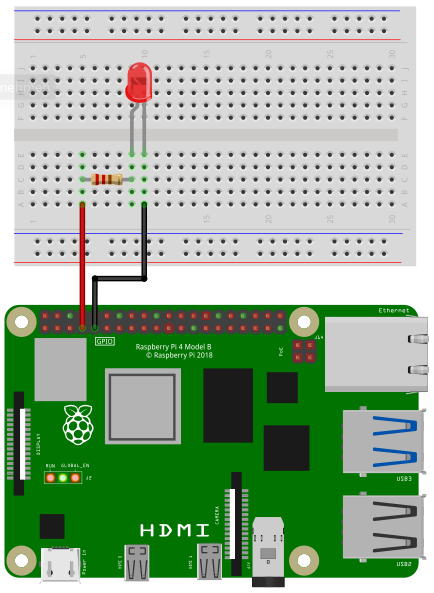
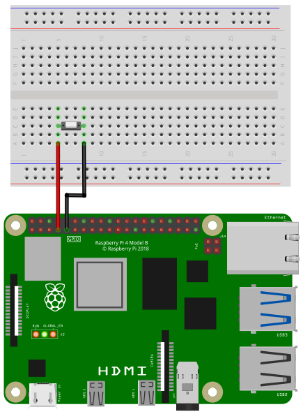

The pins on the Raspberry Pi are number according to Broadcom’s GPIO numbering:
To access the gpio pins import the library gpio:
import gpioOpen()
Open(chipname)Open gpio access to the chip specified by the optional parameter
chipname. If chipname is not provided, the
standart gpiochip of the Raspberry Pi will be opened.
chipname
/dev/gpiochip0SetInput(PinNumber)
SetInput(PinNumber, Resistor)Sets GPIO pin PinNumber as an input. If
Resistor is given, the internal pullup or pulldown resistor
can be set. The default setting is to use the internal pullup resistor.
If Resistor is given all input pins will use this setting.
(TODO: setup every pin individual.)
Before using a GPIO pin, you should use either SetInput
or SetOutput.
PinNumber
Resistor
SetOutput(PinNumber)Sets GPIO pin PinNumber as an output. The initial sate
of the pin is set to low. Before using a GPIO pin, you should use either
SetInput or SetOutput.
PinNumber
SetTrigger(PinNumber)
SetTrigger(PinNumber, EdgeDetection)
SetTrigger(PinNumber, EdgeDetection, Resistor)Sets GPIO pin PinNumber as a trigger input. The optional
parameter EdgeDetection defines, if the trigger is
detecting rising or falling edge or both. If Resistor is
given, the internal pullup or pulldown resistor can be set. The default
setting is to use the internal pullup resistor. If Resistor
or EdgeDetection are given all trigger input pins will use
these settings. (TODO: setup every pin individual.)
PinNumber
EdgeDetection
Resistor
Write(Pin, Level)
Write(PinArray, LevelArray)
Write(PinArray, LevelBitMask)If Pin is configured as output, the voltage level
level can be set to ground (low) or +3.3V (high). Multiple
pins can be set simultaneous by passing an 1D array of pin numbers. The
signal levels of these pins can be set by passing an 1D array of levels.
Alternative a integer number can be passed as a parameter. Every bit of
this number sets a pin. The lowest bit corresponds to the first entry of
the pin array.
Pin
Level
PinArray
LevelArray
LevelBitMask
Example:
Write(4, 0) ' Sets pin 4 to low (ground)
Write(4, 1) ' Sets pin 4 to high (+3.3V)
Write([4,5,6,7,8,9,10,11], [0,1,1,0,1,0,1,1])
Write([4,5,6,7,8,9,10,11], 0b11010110)Status = Read(Pin)
Status = Read(PinArray)If Pin is configured as input, the voltage level can be
read. If the specified pin is at ground (low), Status will
be 1. If the pin is at +3.3V (high) Status
will be 0. If an array is given, every element is a pin number. All pins
will be read simultaneous. The return value Status will be
an array.
Pin
PinArray
Status
Example:
Status = Read(4) ' Reads the voltage level of pin 4
Status = Read([4,5,6,7,8,9,10,11])Trigger(Pin)
Trigger(Pin, Duration)
Trigger(Pin, Duration, Level)If pin Pin is configured as output, a trigger pulse at
this pin will be emitted with a Duration in microseconds
and a voltage level Level of low or high.
Pin
Duration
Level
Example:
Trigger(4, 50, 1) ' A 50 µs Trigger pulse at pin 4 with +3.3V (high)Status = WaitForTrigger(Pin)
Status = WaitForTrigger(Pin, Timeout)Wait for a raising edge event at the specified pin Pin.
Timeout is in seconds. Timeout an optional
parameter.
Pin
Timeout
Status
Integer: -1, 0, 1
| Value | Status |
|---|---|
| -1 | error |
| 0 | time out |
| 1 | edge detected |
Example:
Status = WaitForTrigger(4, 1) ' Pin 4; timeout 1sReleasePin(Pin)Releases the pin Pin. This pin can not be used anymore
until it is configured again using SetInput,
SetOutput or SetTrigger.
Close()When closing a SmallBASIC program, all pins will be released. If you
want to release all pins at once manually use Close.
In the following image you can see how to wire a LED.

Depending on the type of LED you need a certain resistor. When using the LED without a resistor, you will destroy the LED and maybe even parts of your Raspberry Pi.
When you buy a LED, look for two important values in the specification: Forward Voltage and Forward Current. The third important value is the Supply Voltage. In case of a Raspberry Pi it is 3.3V. Online you can find many LED resistor calculators. But if you want to see your LED blinking without studying to much and you don’t expect maximum brightness, then go for 220 Ohms or even 1000 Ohms.
Connect the resistor to pin 4 and the LED to ground.
import gpio
gpio.Open()
gpio.SetOutput(4)
for ii = 1 to 10
v = !v
gpio.Write(4, v)
delay(100)
nextIn the following image you see the wiring of a push button. When you press the button, the circuit will be closed, otherwise the circuit is open. The button is connected to pin 4 and ground. An internal pullup resistor will be enabled automatically.

import gpio
v = 0
gpio.Open()
gpio.SetInput(4)
while(1)
print gpio.Read(4)
delay(500)
wendimport gpio
v = 0
gpio.Open()
gpio.SetOutput(4)
for ii = 1 to 10
gpio.Trigger(4)
delay(200)
nextimport gpio
v = 0
gpio.Open()
gpio.SetInput(4)
result = gpio.WaitTrigger(4, 5)
select case result
case 0: print "Time out"
case 1: print "Rising edge detected"
case -1: print "Error"
end selectimport gpio
gpio.Open()
gpio.SetOutput(18)
gpio.SetOutput(15)
gpio.SetOutput(14)
gpio.SetOutput(13)
gpio.SetOutput(12)
gpio.SetOutput(11)
gpio.SetOutput(10)
gpio.SetOutput(9)
starttime = ticks()
for ii = 1 to 100000
v = !v
gpio.Write([18, 15, 14, 13, 12, 11, 10, 9], [v, v, v, v, v, v, v, v])
next
print "8 pin parallel WRITE(Array, Array) "; round(100000 / ((ticks() - starttime)/1000) /1000); "kHz"
starttime = ticks()
v = 0b10101010
for ii = 1 to 100000
v = v XOR 0b11111111
gpio.Write([18, 15, 14, 13, 12, 11, 10, 9], v)
next
print "8 pin parallel WRITE(Array, Number) "; round(100000 / ((ticks() - starttime)/1000) /1000); "kHz"